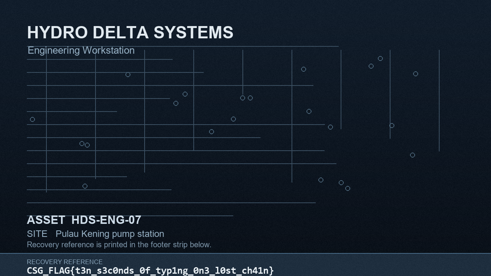

BadUSB Case
The workstation collection contains three .lockd files, a ransom notice, a replacement background, a process-creation export, and a manifest. The USB image contains the program that sealed the files, but its staging directory is absent from the normal directory listing. Recovering that program is only half the job: a TLS callback changes its cipher constants before main, so a direct translation of the constants visible on disk produces the wrong key.
The recovered login background displays:
CSG_FLAG{t3n_s3c0nds_0f_typ1ng_0n3_l0st_ch41n}
This writeup starts with the supplied badusb_case.zip. The solver uses only the Python standard library. It reads the image, recovers the executable, derives the key, and restores all three sealed files without running the Windows executable.
1. Establish the evidence and disk layout
Extract the archive into a working directory and verify the image against its supplied checksum:
unzip badusb_case.zip -d badusb_case
cd badusb_case
sha256sum -c HDS-USB01.dd.sha256
file HDS-USB01.dd
mmls HDS-USB01.ddThe image is 536,870,912 bytes. Its SHA-256 is 62dac5eb80935f13cd06a3f644275ddff28b95faceddef0fa1801be9dc05dd7d, matching the .sha256 file. The MBR contains one FAT32 partition starting at sector 2048. All recovery below reads the image; no filesystem repair or writable mount is needed.
The partition parameters are useful later:
| Value | Result |
|---|---|
| Partition start | Sector 2048, raw offset 0x100000 |
| FAT32 reserved sectors | 32 |
| FAT0 start | Raw offset 0x104000 |
| FAT32 data area | Filesystem sector 2074, raw offset 0x203400 (2,110,464) |
| Cluster size | 4096 bytes |
| Root directory | Cluster 2 |
These come from fsstat -o 2048 HDS-USB01.dd. Sleuth Kit’s -o value is in sectors, while the raw offsets above are in bytes. The start of cluster n is:
2,110,464 + (n - 2) × 40962. Follow the USB configuration into the orphaned directory
List the FAT32 tree and extract its visible configuration:
fls -r -p -o 2048 HDS-USB01.dd
icat -o 2048 HDS-USB01.dd 3The listing contains promotional photos, firmware, example scripts, and FL9.CFG. It does not contain FWSTAGE. The configuration supplies a lead that the listing does not:
script_store=reserved
script_bytes=15600
payload=\FWSTAGE\PRN_DRV.BIN
payload_bytes=106528
stealth=1The payload name appears in a directory structure still present in raw cluster data. At raw offset 2,487,296, the directory’s . and .. entries remain; at 2,487,360, its 32-byte file entry contains the FAT short name PRN_DRV BIN. That entry specifies start cluster 43 and size 106,528 bytes. The directory is cluster 94 because 2,110,464 + (94 - 2) × 4096 = 2,487,296. The parent entry was removed, which is why ordinary fls recursion did not reach it.
Cluster 43 begins at raw offset 2,278,400. The FAT chain is still intact:
43 44 45 46 47 48 56 57 58 59 60 61 69 70 71 72 73 74
82 83 84 85 86 87 88 89 90It has 27 clusters. The gaps matter: reading 106,528 bytes contiguously from cluster 43 would mix in other files. The solver follows each 28-bit FAT entry, joins the 4096-byte clusters, and trims to the size in the directory entry.
The reconstructed file begins with LKD1. Its first 32 bytes are a wrapper:
| Offset | Meaning | Value |
|---|---|---|
0x00 |
Magic | LKD1 |
0x04 |
Decrypted length, little-endian u32 |
106,496 |
0x10 |
RC4 key, 16 bytes | 3fa9c1750e6b84d2a70f5c1938e2b6a4 |
0x20 |
RC4 ciphertext | Windows executable bytes |
The FAT file length is exactly 32 + 106,496. RC4 decryption produces an MZ header and a PE32+ x86-64 console executable. Its SHA-256 is 7ab789767b932f4d2f425ddb96476356cc031e50d9960afaa858c58b6466f7b5. The solver verifies this hash before using the PE. It does not execute the file.
3. Read the pre-partition keyboard script
The configured script is before the partition, at raw sector 1. The first 32 bytes start with HIDQ; the 15,600 bytes after them consist of eight-byte HID keyboard reports. In each report, byte 0 is the modifier field and byte 2 is the first key usage. For example, 08 00 15 ... is GUI+R, and Shift is selected by modifier & 0x22. Tracking key-down transitions avoids emitting held keys twice.
The meaningful portion of the reports describes this operation (normalized pseudocode, not a byte-for-byte PowerShell transcript):
$b = [IO.File]::ReadAllBytes('D:\FWSTAGE\PRN_DRV.BIN')
$key = $b[16..31]
$length = [BitConverter]::ToUInt32($b, 4)
$program = RC4($b[32..(31+$length)], $key)
[IO.File]::WriteAllBytes("$env:TEMP\prnupd.exe", $program)
& "$env:TEMP\prnupd.exe" -d \\.\PHYSICALDRIVE1 -t <one-file> -i 'NX7-2R8QF4KD9T'This explains both the LKD1 wrapper and the SIEM rows: elevated PowerShell starts prnupd.exe from the user’s Temp directory with -d \\.\PHYSICALDRIVE1 and a -t target. The export truncates the target command lines, so the HID reports are the source for the campaign identifier. The binary’s argument parser accepts one target path and has no directory walk; the separate process-creation rows correspond to separate invocations.
4. Map the executable’s input and output
Static analysis of the recovered PE gives the important calls and data flow:
| Virtual address | Role |
|---|---|
0x140001000 |
TLS callback mutating round constants on process attach |
0x1400011a0 |
Build the 16-byte campaign key |
0x1400014f0 |
Encrypt a target’s initial whole blocks with CBC chaining |
0x140001790 |
Compress one full block into the custom hash state |
0x1400018c0 |
16-byte block cipher |
0x140001aa0 |
Custom 128-bit hash, including padding and length finalization |
0x140001d90 |
Expand block-cipher round keys |
0x140001fa0 |
Parse -d, -t, -i, read device sectors, and write .lockd |
main reads sector 0 of the device and checks the MBR signature. It takes the partition start from the MBR, reads that partition’s FAT32 boot sector, then reads raw sector 1 for HIDQ. The key inputs are:
HIDQ bytes at raw offsets 520..535 : 5a1f0c93ee47b2d80148a6cf3b91d27e
FAT32 volume ID at boot + 0x43 : 921e4a7c (four on-disk bytes)
Campaign identifier : NX7-2R8QF4KD9T (ASCII, no terminator)
Recovered executable : all 106,496 bytesThe executable’s own file bytes are hashed first. Then 0x1400011a0 hashes the concatenation of the HIDQ seed, four volume-ID bytes, 16-byte executable digest, and ASCII identifier. The output is the file-encryption key. The executable digest and key, after correct initialization, are:
executable digest: 79850f8b25478649341e0130fb8f6401
campaign key: b8e4563dd09366d360e772249526377f5. Account for the TLS callback before modeling the cipher
The first attempt to model the block cipher directly from .data decrypted every file to garbage and failed every trailer CRC32. The hash and block-cipher translations agreed with direct emulation of their functions, so the discrepancy was in process state rather than in those translations.
The cross-reference that resolves it is a write to the constant table at 0x140019000. The routine at 0x140001000 is a TLS callback. When its reason argument is process attach (EDX = 1), it obtains the loaded PE header’s TimeDateStamp and runs a 32-bit linear congruential generator:
state = pe_timestamp # 0x6a55f3cb
for i in range(22):
state = (state * 0x19660d + 0x3c6ef35f) & 0xffffffff
live_constants[i] = disk_constants[i] ^ stateThe first table entry changes from 0xd4595925 on disk to 0x649b6f8b in the process. The next three live entries are 0x62226775, 0x7d04477f, and 0x28d6c043. The callback changes 22 dwords, while the key schedule consumes the first 21 to generate 22 round keys, counting its initial key word. Applying these writes changed the executable digest and campaign key to the values above. It also made all three file checks pass.
The cipher operates on two little-endian 64-bit words. With 64-bit wraparound, C[i] as the initialized 32-bit constant, and K[0], L[0] from a 16-byte key block, its expansion is:
L[i+1] = (ROR64(L[i], 8) + K[i]) XOR C[i]
K[i+1] = ROR64(K[i], 61) XOR L[i+1] for i = 0..20The 22 encryption rounds are:
X[i+1] = (ROR64(X[i], 8) + Y[i]) XOR K[i]
Y[i+1] = ROR64(Y[i], 61) XOR X[i+1] for i = 0..21This is a Speck-like ARX construction. The inverse used by the solver applies the rounds in reverse order:
Y[i] = ROL64(Y[i+1] XOR X[i+1], 61)
X[i] = ROL64((X[i+1] XOR K[i]) - Y[i], 8)The custom 128-bit hash starts at two fixed 64-bit words, 0xa2de40f113e09aa5 and 0x3b008f876c3f3b4d. For each full 16-byte input block it encrypts the current state with that block as the cipher key, then XORs the encrypted state into the previous state. It processes one padded block containing the remaining bytes and 0x80, even when the input length is a multiple of 16. A final block is <u64 original_length, u64 0x07c8f4142d06dd90>. These byte orders and the extra finalization are required for the executable digest, campaign key, and per-file IVs to match.
6. Parse .lockd and restore the files
The program encrypts only the initial whole blocks of each file, capped at 0x40000 bytes (262,144). It appends a 40-byte trailer; the original file bytes before the trailer keep their length. The trailer layout is:
offset size field
0x00 4 LKD7 magic
0x04 4 version = 1
0x08 4 encrypted prefix length
0x0c 8 original file size
0x14 4 CRC32 of the original plaintext
0x18 16 per-file digest / CBC IVThe IV is independently reproducible. The program hashes the original size as a little-endian u64 followed by the target’s uppercased basename in single-byte ASCII. For lockscreen.bmp, the basename is LOCKSCREEN.BMP, so:
iv = hash128(struct.pack('<Q', 2764854) + b'LOCKSCREEN.BMP')
# d058d5a92844eefb7366944a3962da31The sealed files’ trailer values are:
| Original basename | Size | Encrypted prefix | Stored CRC32 | Stored IV |
|---|---|---|---|---|
OPS_HANDOVER.TXT |
741 | 736 | a79fc2f8 |
71184fb5a656176762942816e1f459d7 |
SHIFT_ROSTER.CSV |
325 | 320 | b047d5a3 |
1780516a1ed587ac516cbe1196c32a33 |
LOCKSCREEN.BMP |
2,764,854 | 262,144 | 35a22ee5 |
d058d5a92844eefb7366944a3962da31 |
For each encrypted block, save its ciphertext, invert the block cipher under the campaign key, XOR with the previous ciphertext (or the IV for block zero), then advance the chaining value. The remainder after the encrypted prefix is copied as-is. The solver checks the per-file IV formula before decryption and CRC32 afterward.
The partial-encryption cap explains a useful visual clue. A 1280×720, 24-bit BMP has 3840 bytes per pixel row and stores rows bottom-up. The 262,144-byte encrypted prefix covers the BMP header and roughly 68 bottom rows. Most of the background could be previewed from unchanged bytes; the footer strip containing the recovery reference remained encrypted. The preview located the text but did not reveal it. Successful decryption restored that strip and the BMP header.
7. Reproduce and verify the recovery
Save the solver as solve.py in the directory containing HDS-USB01.dd and victim/, then run:
python3 solve.py
file work/prnupd.exe work/C_ProgramData_HDS_Branding_lockscreen.bmp
sha256sum work/prnupd.exe work/C_ProgramData_HDS_Branding_lockscreen.bmpThe solver creates work/ and prints the initialized executable digest, campaign key, and each file’s computed and stored CRC. In the verified run, all three pairs matched:
LOCKSCREEN.BMP 0x35a22ee5 = 0x35a22ee5
OPS_HANDOVER.TXT 0xa79fc2f8 = 0xa79fc2f8
SHIFT_ROSTER.CSV 0xb047d5a3 = 0xb047d5a3The recovered executable and BMP hashes are:
7ab789767b932f4d2f425ddb96476356cc031e50d9960afaa858c58b6466f7b5 work/prnupd.exe
2ae2652a40498248c0ca92ad4715cc0c695c3a4ee7cffcd07151d2f0a4b59d32 work/C_ProgramData_HDS_Branding_lockscreen.bmpThe BMP parser identifies the result as a 1280×720, 24-bit Windows bitmap. Its footer visibly prints the flag quoted at the start. This is a visual transcription from the CRC-validated recovered file; it is not a string extracted from the sealed bytes.